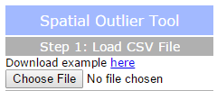
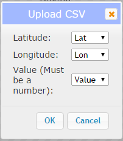
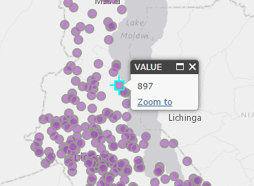
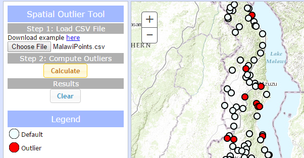

This application find spatial outliers in geospatial data. For more information on the outlier analysis method, please click here.
Spatial Outlier Tool
Step 1
Click the "Choose File" button and navigate to a csv file that contains at the minimum a latitude or Y column, a longitude or X column, and a value column.
A popup will appear. Choose the column for the latitude, longitude, and value that you wish to map and click "Ok".
Your points should be mapped. To view the value for each point, click on it.
Step 2
Click "Calculate".
Results
After a short time, the map should display your layer with different symbols. Default points are shown in white and outlier points in red. You can clear the map to begin with a new dataset by clicking the "Clear" button.
Basemap picker
Click the basemap button to toggle between the topographic basemap and a satellite imagery basemap.